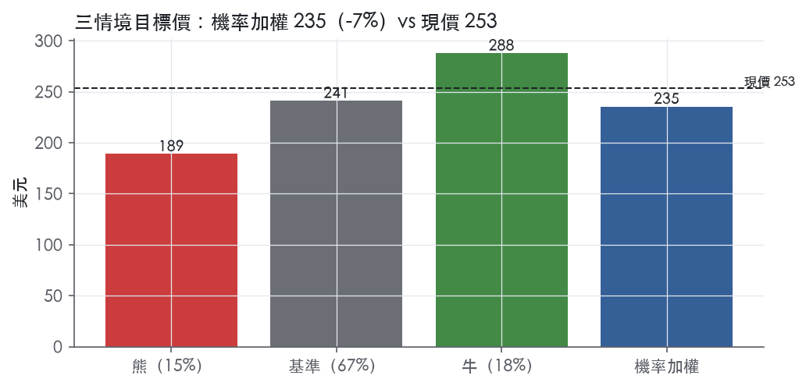
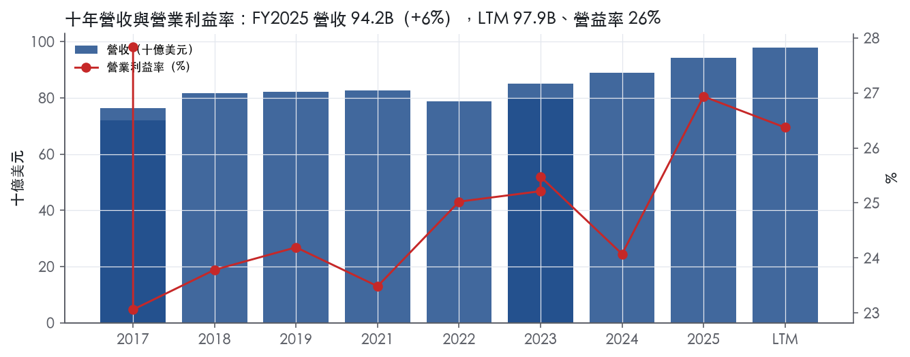
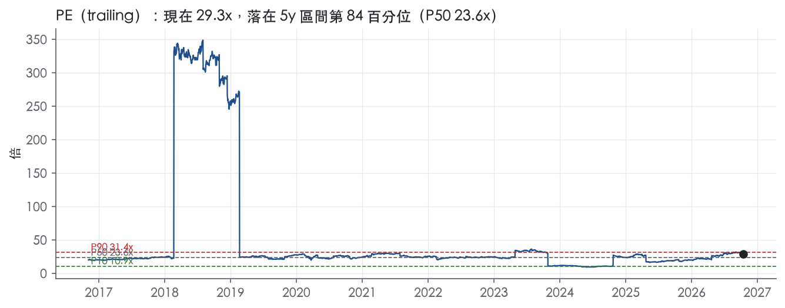
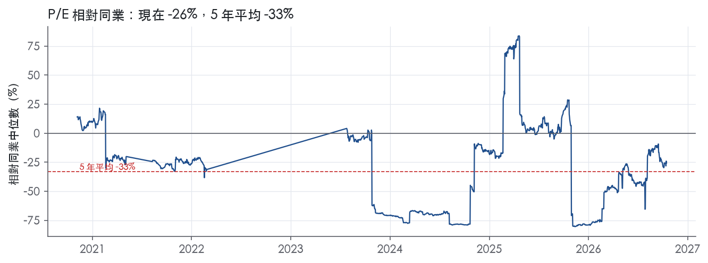
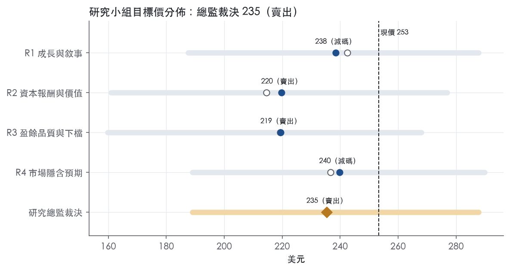
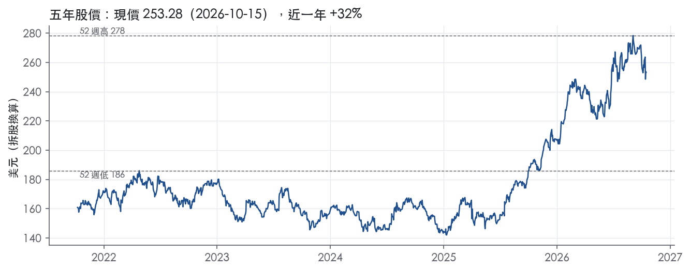

評等總表 › 醫療保健 › JNJ
營收加速盈餘未跟上，倍數透支看空｜評等 賣出｜目標價 235
| 報告日 | 評等 | 目標價 | 當時股價 | 超額報酬 |
|---|---|---|---|---|
| 2026-10-15 | 賣出 | 235 | 253 | -15.2% |
| 2026-10-09 | 減碼 | 250 | 261 | -12.3% |
| 快評 | 動作 | 結論 |
|---|---|---|
| 2026-10-13 | 提前重開研究小組 | 獲利遠低於預測，滑石粉觸發降評檢查 |
| 評等 | 賣出（邊界，鄰近減碼） |
| 12 個月目標價 | 235 美元 |
| 現價 | 253.28 美元（2026-10-15） |
| 預期報酬 | 股價 -7.1%＋股息 2.1%＝總報酬 -5.0%；同業籃門檻 10.2%，超額 -15.2% |
| 估值方法 | P/E 25.0x，套在第 5–8 季的EPS（也就是一年後的未來四季） |
| 三情境 | 熊 189／基準 241／牛 288 |
| 研究流程 | 四位研究員兩輪辯論＋研究總監裁決 |
| 資料來源 | SEC EDGAR XBRL、Tiingo、FRED（全免費） |
營收加速盈餘未跟上，倍數透支看空（研究總監裁決，四位研究員兩輪辯論後）
評等 賣出（邊界，鄰近減碼）｜12 個月目標價 235 美元（總監三情境機率加權 242 與研究員中位數 229 各半）｜現價 253.28（2026-10-15）
預期報酬：股價 -7.1%＋股息 2.1%＝總報酬 -5.0%。同業籃門檻 10.2%，超額 -15.2%，離減碼的分界不到三個百分點，屬邊界評等（落在其他級距的機率約五成）。
估值方法：P/E 25.0x，套在第 5–8 季的EPS（也就是一年後的未來四季）。三情境：熊 189（15%）／基準 241（67%）／牛 288（18%）。
評等說明：研究總監自己的機率加權目標價 242 美元對應「減碼」；與研究員第二輪中位數 229 美元各半後為 235 美元，落入「賣出」。兩者只差一級，請把這檔讀成「減碼～賣出」，正文裡總監的立場文字以「減碼」寫成。
什麼會讓研究總監改變看法：FY2027指引操作性成長或調整後EPS成長中點≥8%，倍數上修至27x、立場轉中性；10-Q追加滑石粉準備或FY2027操作性成長中點≤5.5%，熊機率上調並轉賣出。
| 過去四季（實際，FY2026Q2） | 未來四季 | 第 5–8 季 | 第 9–12 季 | |
|---|---|---|---|---|
| 營收（B） | 97.9B | 104.3B | 111.3B | 117.9B |
| 營收成長 | 8.1% | 6.5% | 6.7% | 6.0% |
| 營業利益率 | 26.4% | 25.5% | 26.0% | 26.0% |
| EPS（美元） | 8.64 | 8.84 | 9.64 | 10.24 |
| EPS 成長 | -7.7% | 2.3% | 9.1% | 6.2% |
| 每股股息（美元） | 5.24 | 5.24 | 5.24 | 5.24 |
| P/E（現價） | 29.3x | 28.7x | 26.3x | 24.7x |
| 股息殖利率（現價） | 2.1% | 2.1% | 2.1% | 2.1% |
過去四季為申報數字；預測為研究總監的假設、程式計算。倍數與殖利率都用現價計算，用來看現價對應各期獲利的高低。
| 項目 | 上次（2026-10-12） | 這次（2026-10-16） | 變動 |
|---|---|---|---|
| 評等 | 減碼 | 賣出 | 變動 |
| 機率加權目標價（美元） | 250 | 235 | -6.0% |
| 超額報酬 | -12.3% | -15.2% | -2.8 pp |
| 目標倍數 | 26x | 25x | — |
| 未來四季營收成長 | 7.0% | 6.5% | -0.5 pp |
| 未來四季營益率 | 26.6% | 25.5% | -1.1 pp |
| 未來四季 EPS（美元） | 9.28 | 8.84 | -4.8% |
| 熊／基準／牛機率 | 17／65／18 | 15／67／18 | — |
程式計算；「未來四季」各自從當次報告的資料起點算。研究總監逐點說明見第八章「與上次報告比較」。
| 情境 | 機率（歷史） | 故事 | 未來四季營收成長 | 第 5–8 季營益率 | 倍數 | 目標價 | 股價漲跌 |
|---|---|---|---|---|---|---|---|
| 熊 | 15%（15%） | 風險表第1條滑石粉提案超出準備且無第三方保險，疊加第2條STELARA不收斂與MedTech停滯、第4條骨科分割干擾，利潤率回FY2024水準、倍數回帶P50 | 5.5% | 24.5% | 21.5x | 189 | -25.4% |
| 基準 | 67%（67%） | STELARA拖累收斂、新藥接棒帶來中高個位數成長，但接棒產品附帶Genmab權利金外流約0.4pp，常態營益率26.0%，調整後EPS追不上營收，倍數由P75–P90退到P75下方 | 6.5% | 26.0% | 25.0x | 241 | -4.8% |
| 牛 | 18%（18%） | ICOTYDE、TECVAYLI+TALVEY與OTTAVA放量，2027指引操作性成長≥8%且營運槓桿轉正蓋過權利金外流，倍數守在帶P90以內 | 7.6% | 28.0% | 27.0x | 288 | 13.6% |
目標價由程式依研究總監的驅動與倍數計算；機率由研究總監給定。括號內是歷史頻率：把這檔股票過去十年 12 個月報酬的波動形狀，置中在基準情境，結果落在各情境附近的比例。

四位研究員用不同方法各自估值，回應研究總監的質疑後交出第二輪，最後由總監逐點裁決。各研究員的主張見第七章，裁決理由見第八章，完整論證見《研究底稿》。
| 立場（一輪→二輪） | 加權目標價（一輪→二輪） | 評等（一輪→二輪） | 第二輪倍數 | 熊～牛目標價 | |
|---|---|---|---|---|---|
| R1 成長與敘事 | 中性→看空 | 242→238 | 減碼→減碼 | 24.0x | 188～288 |
| R2 資本報酬與價值 | 看空→看空 | 214→220 | 賣出→賣出 | 23.0x | 161～277 |
| R3 盈餘品質與下檔 | 看空→看空 | 219→219 | 賣出→賣出 | 23.5x | 160～268 |
| R4 市場隱含預期 | 看空→看空 | 237→240 | 減碼→減碼 | 25.0x | 189～290 |
| 研究總監裁決 | 看空 | 235 | 賣出 | 25.0x | 189～288 |
目標價由程式依各自的驅動與倍數計算；評等＝機率加權總報酬 − 同業籃門檻。
Johnson & Johnson 是一家以人體健康為核心、靠兩大分部撐起的全球醫療保健控股公司。公司在幾乎全球所有國家經營業務，以研發、製造及銷售廣泛的醫療保健產品為主業¹。公司約有 138,200 名全時約當員工（FTE）從事研發、製造與銷售¹。J&J 是控股公司型態，旗下營運子公司各自負責策略規劃與日常營運，由執行委員會設定整體策略與優先順序¹。客戶端以醫療專業人士、醫院、藥局通路商與終端患者為主，產品直接銷售給零售商、批發商、經銷商、醫院與醫療專業人員供處方使用¹。LTM 營收規模達 97.93B 美元，屬於大型藥廠加醫療器材的複合型企業。
公司組織為兩大業務分部：Innovative Medicine 與 MedTech¹。Innovative Medicine 聚焦於腫瘤、免疫、神經科學、肺動脈高壓、傳染病及心血管與代謝六大治療領域¹。該分部旗艦產品眾多，包括多發性骨髓瘤藥物 DARZALEX／DARZALEX FASPRO、CAR-T 療法 CARVYKTI、前列腺癌藥物 ERLEADA／ZYTIGA、免疫科用藥 STELARA 與 TREMFYA，以及神經科學用藥 SPRAVATO、CAPLYTA 等¹。DARZALEX 系列佔公司 2025 財年總營收約 15.0%，STELARA 約佔 6.5%，TREMFYA 約佔 5.5%，三者合計逼近營收三成，顯示 Innovative Medicine 的集中度風險不低。值得留意的是，STELARA 因生物相似藥上市持續侵蝕銷售，公司明言預期全球生物相似藥持續推出將持續對 STELARA 銷售造成負面影響¹。
MedTech 分部則涵蓋心血管、骨科、手術與視力四大產品組合：心血管包括電生理產品、Abiomed 機械循環支持裝置、Shockwave 血管內碎石術產品及神經血管照護¹；骨科涵蓋關節重建、創傷、脊椎與運動醫學；手術組合包括器械、能量裝置、縫合器、生物手術產品及數位與機器人技術，並含 Mentor 乳房整形美容與重建產品；視力組合則以 ACUVUE 隱形眼鏡與 TECNIS 高階人工水晶體為主¹。2025 年 10 月，公司宣布計畫分割骨科業務，目標在宣布後 18 至 24 個月內完成¹。單季來看，FY2026Q3 Innovative Medicine 營收 16.757B 美元，MedTech 營收 8.642B 美元，兩者比例約 2:1，Innovative Medicine 仍是營收主力且成長更快（7.7% 對 2.5%，皆為申報成長）²。各分部確切營業利益率 10-K 未揭露。
公司業務遍及全球幾乎所有國家，但各地主要市場、產品組合與配銷方式因當地文化與制度而異¹。海外部分投資活動因國際經濟不穩定、限制性經濟政策及政治法律制度不確定性，面臨高於美國同類活動的風險¹。以 FY2026Q3 區域表現看，美國銷售 14,959M 美元、年增 9.1%；國際銷售 10,440M 美元，申報成長 1.5%、操作性成長（排匯率）1.8%，美國明顯跑贏國際市場²。MedTech 通路以批發商、醫院與零售商為主，產品主要供醫師、護理人員、醫院、眼科專業人員與診所使用¹；Innovative Medicine 則直接配銷至零售商、批發商、經銷商、醫院與醫療專業人員供處方使用¹。美國市場成長明顯優於國際，顯示 IRA 藥價協商等政策壓力在國際端或匯率逆風疊加下更明顯，但短期美國市場受惠於新藥放量。
過去四個季度 J&J 營收持續加速成長，從年增個位數到接近兩位數。FY2025Q3 營收 23.99B 美元、年增 6.8%，毛利率 69.6%，營益率 29.2%（／相關欄位見八季表）。FY2025Q4 營收 24.56B 美元、年增 9.1%，但營益率回落至 22.2%（可能反映第四季費用季節性較重）；10-K 指出全年支出通常第四季較重，主要反映廣告與研發支出決策增加¹。FY2026Q1 營收 24.06B 美元、年增 9.9%，EBITDA 8.29B 美元。FY2026Q2 營收 25.31B 美元、申報成長 6.6%，操作性成長 5.6%，EPS 2.27 美元，調整後 EPS 2.90 美元，自由現金流約 8.7B 美元；公司當季將 2026 全年預估申報營收上調至 101.1B 美元（中點），並表示將首度在公司 140 年歷史上突破年營收 100B 美元³。FY2026Q3 營收 25.4B 美元，申報成長 5.9%、操作性成長 6.0%；GAAP EPS 僅 0.09 美元，因認列與滑石粉訴訟和解提案、收購 Firefly Bio 及與 Sail Biomedicines 戰略合作相關的一次性特別費用，調整後 EPS 為 2.59 美元；公司同步上調 2026 全年預估申報營收至 101.2B 美元（中點 7.4% 成長）、調整後 EPS 上調 0.06 美元至 11.10 美元（中點 2.9% 成長）²。Innovative Medicine 在 Q3 操作性成長 7.9%，MedTech 僅 2.5%，STELARA 單季即拖累 Innovative Medicine 成長約 690 個基點²。GAAP 淨利單季暴跌 95.9% 主因一次性特別費用而非營運惡化，不宜簡單外推至未來季度。
公司管理層表示第三季「強勁表現與加速的季度成長環比反映我們聚焦投資組合的動能加速」，並稱透過持續推進突破性療法與對高成長領域的策略性投資，「使我們更清楚看到十年底前達到雙位數成長的路徑」²。第二季新聞稿中管理層強調「創新的力量、產品組合的深度以及管線的動能」，並以 2026 年營收首度突破 100B 美元為 140 年來的里程碑³。10-K 層面，公司將專利保護、持續的生命週期開發計畫與研發投資列為其核心競爭策略，並明確表示新產品開發與智財保護是公司在各業務領域成功的關鍵¹。
J&J 的成長引擎清晰分兩軌：Innovative Medicine 靠 CARVYKTI、TREMFYA、RYBREVANT/LAZCLUZE 等新一代腫瘤與免疫藥物接棒 STELARA 流失的生物相似藥衝擊，MedTech 則靠 Shockwave、電生理與剛取得 FDA 市場授權的 OTTAVA 機器人手術系統打開新成長曲線。計畫中的骨科業務分割若在 18–24 個月內完成，將使 MedTech 結構更集中於心血管、手術與視力三塊高毛利領域，但短期內會造成營收基數與可比性干擾。Q3 GAAP EPS 的大幅下滑雖屬一次性費用，但滑石粉訴訟和解提案的最終金額與時程仍是觀察重點，值得在後續季度追蹤現金流與特別費用認列節奏。

J&J 屬於寬護城河，我們有把握其 ROIC 在未來 10 年以上仍高於資本成本。依據有兩條：一是藥品與器材兩端都有法規核准、專利與品牌構成的進入障礙；二是十年 ROIC 全數高於資本成本代理值，而且波動很小。趨勢評為穩定而非變寬，原因是最大產品將進入美國專利到期期，IRA 政府定價名單也持續擴大，這兩股力量會抵銷新藥放量帶來的加寬效果。趨勢也不評為變窄，因為期間內 STELARA 已承受生物相似藥衝擊，ROIC 最低仍有 16.9%，高於 10.2% 的資本成本代理值。
護城河的主體是無形資產，MedTech 端的轉換成本是次要支撐。
無形資產（專利與授權、法規核准、品牌）
轉換成本（MedTech）
原文沒有足以支撐成本優勢、網路效應或效率規模的證據，原料也是多來源、普遍可取得，因此這三類不列入。
數字大致支持寬護城河的判斷，但有兩處衝突需要交代。
衝突一：FCF 利潤率處於十年低點。 最新值 20.9%，正好是十年最低，十年平均為 22.8%。我們判斷，部分原因是最大產品的授權權利金隨銷售成長而墊高，屬於護城河的「租金外流」，不是競爭侵蝕，所以維持寬評級。若下一個年度再創新低，且無法以權利金或一次性項目解釋，就應下修評級。
衝突二：ROE 波動大。 ROE 標準差 11.6%，區間 2.0% 至 48.3%。同期 ROIC 與營益率都很平穩，可見 ROE 的波動來自訴訟、稅務等營業外一次性項目，與競爭地位無關，因此評級不以 ROE 為依據。
其他限制。
最大威脅是營收集中在少數產品、獨佔期陸續到期，其次是美國政府定價。
專利到期與仿製挑戰
美國政府定價與支付方壓力
下修條件
目標倍數應相對同業給予溢價，理由是十年 ROIC 全數高於資本成本、利潤率波動小，現金流的可預測性高於一般大型藥廠。溢價幅度要設上限：目前 P/E 29.3x（資料包快照 trailing P/E）已接近 5 年 P90 的 31.4x，而 DARZALEX 2029 年美國專利到期落在明確預測期內，不宜用永續高成長來支撐溢價。建議以 5 年中位數 23.6x為錨往上加溢價，而不是以現行倍數為基準。
| 指標 | 最新 | 十年平均 | 標準差 | 最低 | 最高 |
|---|---|---|---|---|---|
| ROIC | 21.2% | 21.8% | 2.2% | 16.9% | 24.4% |
| 毛利率 | 67.9% | 68.1% | 1.5% | 65.6% | 70.3% |
| 營業利益率 | 26.9% | 24.9% | 1.5% | 23.1% | 27.8% |
| FCF 利潤率 | 20.9% | 22.8% | 1.4% | 20.9% | 25.1% |
| ROE | 35.0% | 26.0% | 11.6% | 2.0% | 48.3% |
程式計算。資本成本代理值（10 年債＋5%）：10.2%；ROIC 平均減資本成本：11.6%；ROIC 有資料的 9 年中，高於資本成本 9 年。
LTM 營業現金流／淨利 1.31x、自由現金流／淨利 1.06x，兩者皆綠燈，顯示 LTM 盈餘有現金支撐。應計比率 LTM 為 -3.3%，近三年平均 0.8%，十年平均 -3.2%，長期維持負值或接近零，代表淨利沒有系統性靠應計堆出來。但近三年平均現金轉換（CFO/淨利 1.10x、FCF/淨利 0.89x）明顯低於十年平均（2.75x、2.31x），落差主因是近年淨利被一次性非現金或非經常性項目大幅推升（例如 FY2023、FY2025 淨利年增 19pp、13pp，見量化底稿紅旗），現金流沒有同步跳升，所以比率被壓低，這是分母失真而非現金轉換能力惡化。單季層面，FY2026Q1 CFO 僅 2.51B、FY2025Q1 CFO 僅 4.17B，遠低於其餘季度（資料包最近八季表），屬季節性營運資金波動（下文紅旗第四、五條處理），非結構性惡化。
Q3 2026 GAAP 稀釋 EPS 僅 0.09 美元，年減 95.8%，公司明確指出主因是「one-time special charge for the proposed talc litigation resolution, the acquisition of Firefly Bio, Inc., and the strategic collaboration with Sail Biomedicines」²。調整後（Adjusted）EPS 為 2.59 美元，較去年同期 2.80 美元下滑 7.5%²。GAAP 淨利為 210M 美元，去年同期為 5,152M 美元，年減 95.9%²；調整後淨利為 6,339M 美元，去年同期 6,801M 美元，年減 6.8%²。非 GAAP 口徑的定義是「excludes intangible amortization expense and special items」²，即扣除無形資產攤銷與特殊項目。自由現金流（非 GAAP，定義為 CFO 減資本支出）Q3 YTD 約 15,100M 美元，優於去年同期 14,226M 美元²。我的判斷：talc 訴訟解決金與併購相關費用屬於真實的現金流出（訴訟賠償最終要付現金），不是單純會計口徑的假成本，但屬於非經常性、不應按年化頻率外推；無形資產攤銷才是真正「非現金、可加回」的項目。SBC 僅佔營收 1.4%（LTM、近三年、十年皆一致），規模小,不是調整項目的主要來源，也不構成盈餘灌水的疑慮。
槓桿與付息能力維持穩健，淨負債／EBITDA LTM 0.84x、近三年平均 0.55x、十年平均 0.40x，全部在綠燈區間內；但 LTM 數字較歷史平均明顯上升，淨負債從 FY2022 的 4.27B 一路攀升到 FY2025 的 29.83B（資料包年度表），同期總債務也從 FY2024Q3 的 35.75B 攀升到 FY2026Q2 的 49.04B（資料包八季表），顯示近年舉債力度加大，主要用於併購（Firefly Bio 已完成收購）與股東回饋。利息保障倍數 LTM 25.5x、近三年 27.5x、十年 48.8x，三者均遠高於 8x 的綠燈門檻，付息能力沒有壓力，十年均值下滑是基期利率上升與債務規模擴大的自然結果，非警訊。股東回饋（股利＋回購）／淨利 LTM 38.4%、近三年 18.0%，均低於十年平均 75.2%，呈黃燈，但這是分母（淨利）因訴訟與併購費用被壓低造成的比率失真，不是公司降低回饋力度，股利政策本身沒有變化訊號。
整體而言，五條紅旗中四條源自歷史資料重編或一次性項目基期效應，一條（FY2025 營運資金成長）屬輕度黃燈但未惡化現金轉換，沒有未解釋的紅旗。
估值應以調整後（Adjusted）EPS 為基礎，GAAP 數字因 talc 訴訟特殊費用與併購費用而嚴重失真，不能直接年化外推，Q3 2026 的 GAAP EPS 0.09 美元不具代表性。訴訟賠償本身是真實現金流出，但屬於非經常性，應在估值模型中作為一次性負債項目單獨處理，而非計入永續盈餘能力。槓桿雖處於綠燈但近兩年快速上升（淨負債十年內從個位數跳升至近 30B），加上 Orthopaedics 分割計畫⁴帶來的執行風險，建議估值倍數不宜給在歷史高分位（目前 EV/EBITDA 已在五年 91.3 百分位），對盈餘品質打適度折扣較為合理。
| 項目 | LTM | 近三年 | 十年 | 燈號 | 規則 |
|---|---|---|---|---|---|
| 營業現金流／淨利 | 1.31x | 1.10x | 2.75x | 綠 | ≥1.00x 綠、<0.80x 紅 |
| 自由現金流／淨利 | 1.06x | 0.89x | 2.31x | 綠 | ≥0.90x 綠、<0.60x 紅 |
| 應計比率（(淨利−CFO)／平均總資產） | -3.3% | 0.8% | -3.2% | 綠 | ≤0.0% 綠、>5.0% 紅 |
| SBC／營收 | 1.4% | 1.4% | 1.3% | 綠 | ≤3.0% 綠、>8.0% 紅 |
| 淨負債／EBITDA | 0.84x | 0.55x | 0.40x | 綠 | ≤1.50x 綠、>3.00x 紅 |
| 利息保障倍數（營業利益／利息） | 25.5x | 27.5x | 48.8x | 綠 | ≥8.00x 綠、<3.00x 紅 |
| 稀釋股數年變動 | -0.2% | -3.0% | -1.5% | 綠 | ≤0.0% 綠、>3.0% 紅 |
| （股利＋回購）／淨利 | 38.4% | 18.0% | 75.2% | 黃 | ≥50.0% 綠、<0.0% 紅 |
| 應收帳款成長 − 營收成長（FY2025） | +9.7pp | — | — | 黃 | ≤5pp 綠、>15pp 紅 |
| 存貨成長 − 營收成長（FY2025） | +8.0pp | — | — | 黃 | ≤5pp 綠、>15pp 紅 |
程式計算；燈號以 LTM（無則近三年平均）判定。
| 風險 | 觸發指標（看什麼數字、在哪裡看） | 對 EPS 的影響方向與粗略幅度 | 未來 12 個月發生機率（高／中／低） | 出處 |
|---|---|---|---|---|
| 滑石粉訴訟和解提案金額與時程不確定 | 10-Q／10-K Note 19 揭露的和解提案金額與訴訟進度公告；GAAP 淨利單季已因此由 5,152M 美元降至 210M 美元 | 方向：負向，大；Q3 單季已造成 GAAP EPS 由 2.12 降至 0.09（年減 95.8%） | 高 | 8-K 財報新聞稿（2026-10-13） |
| STELARA 生物相似藥侵蝕 Innovative Medicine 成長 | 10-K／財報新聞稿逐品牌成長貢獻揭露；STELARA 對 Innovative Medicine 操作性成長的基點拖累 | 方向：負向，中；單季已拖累 Innovative Medicine 成長約 690 個基點 | 高 | ²⁵ |
| 美國藥價政策（IRA Part D 政府定價、340B）與全球降價壓力 | IRA 相關政策生效時程（2026 年起部分產品適用）、CMS／Medicare Part D 公告、各國藥價協商結果 | 方向：負向，中；10-K 僅指方向未給數字 | 中 | 10-K 年報 FY2025 Item 1A（風險因素） |
| 骨科業務分割執行風險（18–24 個月時程） | 公司分割進度公告、董事會核准與監管核准時程、分割相關一次性費用認列 | 方向：負向，中；10-K 僅指方向未給數字 | 中 | 10-K 年報 FY2025 Item 1A（風險因素） |
| 製造／供應鏈中斷（自有 63 廠及第三方供應商） | 公司或 FDA 公告的產品召回、工廠停產、cGMP 缺失通知 | 方向：負向，大；10-K 僅指方向未給數字 | 低 | 10-K 年報 FY2025 Item 1A（風險因素） |
滑石粉訴訟是目前唯一已經實際打到財報數字的風險，不是假設性風險。公司在 Item 1A 明言是 JOHNSON'S Baby Powder 相關訴訟被告，且「公司過去曾、未來也可能被要求支付重大金額作為和解或判決結果，可能超出已提列準備」，並特別指出公司不購買第三方產品責任保險，僅靠自有captive保險公司並有限額⁵。Q3 2026 財報已經證明這條風險的殺傷力：淨利從 5,152M 美元跌到 210M 美元，EPS 從 2.12 跌到 0.09，公司明確將此歸因於「滑石粉訴訟和解提案的一次性特別費用」²。這不是一次性噪音可以輕描淡寫的事——和解提案的最終核准金額、分期給付安排與是否有其他司法管轄區跟進索賠，是接下來四個季度現金流與 GAAP EPS 最大的不確定來源。
STELARA 的生物相似藥侵蝕是結構性而非一次性風險。10-K 明言「失去專利排他性後，Innovative Medicine 業務通常伴隨銷售大幅下滑，因競爭者取得生物相似藥等競品的監管核准並進入市場」⁵。業務概況章已指出 STELARA 佔 FY2025 總營收約 6.5%，且 Q3 2026 單季財報證實 STELARA 拖累 Innovative Medicine 操作性成長約 690 個基點²。即使 TREMFYA、CARVYKTI、DARZALEX 等新藥持續放量部分抵銷，STELARA 的下滑斜率若超預期，仍可能壓低 Innovative Medicine 分部毛利貢獻。
美國藥價政策風險方向明確但無法精算幅度。10-K 指出 IRA「已改變 Medicare Part D 給付設計，並已將公司部分產品自 2026 年起納入政府訂價，未來可能擴及更多產品」，且「未能遵循政府對該法律的解釋（訴訟待決中）可能使公司暴露於罰款」⁵。此外 340B 計畫的擴大解釋與潛在濫用「可能對公司財務表現產生負面影響」⁵。這條風險的監測重點是 CMS 每年公告的協商藥價清單是否擴大納入 J&J 核心產品。
骨科分割的執行風險主要在時程與一次性費用，非營運本質風險。公司在 2025 年 10 月宣布分割意向，目標 18 至 24 個月內完成，10-K 明言「完成分割的最終時程無法保證，分割是否完成亦無法保證」，且「完成分割的成本將是重大的」⁵。分割期間的管理層注意力分散、分割相關費用認列節奏，以及分割後 MedTech 剩餘業務（心血管、手術、視力）的獲利結構變化，都是接下來兩年需要逐季追蹤的項目。
製造與供應鏈中斷機率較低但衝擊幅度可能很大，屬尾部風險。公司明言其子公司營運 63 座製造設施並仰賴數千家全球供應商，過去「已經、未來也可能面臨製造內部或外部供應鏈的非預期中斷與延遲」，原因包括監管行動、品質缺陷、勞資糾紛、天災、原料短缺等⁵。這類事件發生時對單一產品線的衝擊可能很大（參考歷史上的產品召回案例），但在任何給定 12 個月窗口內發生在核心產品線上的機率不高。
Q3 GAAP 淨利暴跌 95.9% 之後，市場可能過度聚焦調整後 EPS（2.59 美元）而忽略和解提案現金支付對未來自由現金流與淨負債的實際排擠效果；LTM 淨負債已達 28.28B 美元，和解金若分期入帳，需追蹤是否影響公司維持投資等級信評的緩衝空間。
公司目前 trailing 估值處於近五年高分位（EV/EBITDA 現在 19.2x，5 年分位 91.3%；EV/Sales 分位 89.6%），估值對任何上述風險兌現的敏感度偏高，一旦 STELARA 侵蝕速度或滑石粉和解金額超預期，估值回落空間比過去五年任何時點都更大。
現價 253.28 對應 trailing（過去四季）P/E 29.3x、EV/EBITDA 19.2x、EV/EBITA 21.2x、EV/Sales 6.6x、FCF 殖利率 3.6%。主要估值倍數 P/E 現在 29.3x，落在5 年區間第 84 百分位（P10／P50／P90 = 10.9x／23.6x／31.4x）。

把程式的機械基準預測放到現價下，市場付的前瞻倍數是：P/E（未來四季） 27.7x、P/E（第 5–8 季） 26.1x。反推 DCF 顯示市價隱含未來五年營收年成長 10.8%（WACC 9.0%、終值成長 3.0%、FCF 利潤率 24.7%，SBC 不加回）。
| 倍數 | 現在 | 5 年 P10 | 5 年 P50 | 5 年 P90 | 現在分位 | 全期 P50 |
|---|---|---|---|---|---|---|
| P/E | 29.3x | 10.9x | 23.6x | 31.4x | 84.4% | 24.3x |
| EV/EBITDA | 19.2x | 13.2x | 15.7x | 19.1x | 91.3% | 15.3x |
| EV/EBITA | 21.2x | 14.6x | 17.4x | 21.6x | 85.1% | 17.0x |
| EV/EBIT | 25.0x | 17.6x | 20.9x | 26.1x | 78.9% | 20.7x |
| EV/Sales | 6.6x | 4.4x | 5.3x | 6.6x | 89.6% | 5.0x |
| P/S | 6.3x | 4.2x | 5.1x | 6.4x | 87.6% | 4.8x |
| P/FCF | 27.8x | 18.6x | 23.8x | 29.7x | 81.0% | 21.1x |
trailing 倍數（股價 ÷ 過去四季）；分位以每個交易日計算。
同業籃：ABBV, ABT, ALNY, AMRX, ALKS, ACAD（SIC 2834 同業 61 家中，CY2025 營收最接近的 6 家）。評等門檻 10.2%：同業「倍數不變下持有一年」的隱含報酬中位數（＝ FCF 殖利率 ×(1＋g)＋g，g 為 5 年營收年複合成長並夾在 −2%～8%），每家夾在 0～15%、P/E 低於 5 倍視為資料可疑而排除，中位數再限制在 10 年債到 10 年債＋5% 之間；排除：ALNY（隱含報酬算不出來）。
| 代號 | 市值 | 5 年營收 CAGR | 營益率 | ROIC | P/E | 5 年 P/E 中位數 | EV/EBITDA | P/FCF | 隱含報酬 |
|---|---|---|---|---|---|---|---|---|---|
| JNJ | 618.0B | 2.7% | 26.4% | 21.2% | 29.3x | 23.6x | 19.2x | 27.8x | 6.4% |
| ABBV | 501.9B | 6.0% | 26.2% | 15.8% | 80.1x | 50.5x | 22.8x | 27.6x | 9.8% |
| ABT | 182.3B | 5.1% | 17.1% | 11.3% | 29.3x | 29.5x | 19.2x | 24.7x | 9.3% |
| ALNY | 31.3B | 49.8% | — | — | — | — | — | — | — |
| AMRX | 6.3B | 8.7% | 14.6% | 16.5% | 39.4x | — | — | 49.4x | 10.2% |
| ALKS | 6.7B | 7.3% | 7.0% | — | 104.9x | — | 42.3x | 30.3x | 10.8% |
| ACAD | 3.4B | 19.4% | 7.6% | — | 8.8x | — | — | 23.3x | 12.6% |
| 同業中位數 | 8.0% | 14.6% | 15.8% | 39.4x | 40.0x | 22.8x | 27.6x | 10.2% |
全部 trailing，程式以各公司 SEC XBRL 與 Tiingo 行情計算；第一列為本檔。
P/E 相對同業中位數：現在 -25.7%，過去 1 年平均 -46.0%、3 年 -36.3%、5 年 -33.2%；EV/EBITDA 相對同業中位數：現在 -15.8%，過去 1 年平均 -3.3%、3 年 -12.1%、5 年 -3.5%。

事後實現前瞻倍數帶（P/E，2018-08-17..2025-08-15）：P10／P50／P90 = 12.4x／21.7x／27.3x。它是每個交易日的股價除以之後四季實際實現的指標；一年後，今天的第 5–8 季正是那時的未來四季，所以這條帶是 12 個月目標價的同口徑倍數。因為用的是事後實際而非當時預期，過去成長超乎預期的公司這條帶會偏低。
程式的機械基準（成長率從過去四季年增率三年收斂到 6%、利潤率持平）用 事後實現前瞻 P/E P50 估值得到 211（-16.8%），市場現行前瞻倍數（現價 ÷ 基準 未來四季指標）一年後持平，套在基準 第 5–8 季指標得到 269。這兩個數字只是參考點，不是本報告的目標價；研究員對這個定價的回應在第七章。
下表是每位研究員第一輪（各自獨立）與第二輪（回應研究總監的質疑後）的結果。目標價全由程式依各自的假設計算。
| 立場（一輪→二輪） | 加權目標價（一輪→二輪） | 評等（一輪→二輪） | 第二輪倍數 | 熊～牛目標價 | |
|---|---|---|---|---|---|
| R1 成長與敘事 | 中性→看空 | 242→238 | 減碼→減碼 | 24.0x | 188～288 |
| R2 資本報酬與價值 | 看空→看空 | 214→220 | 賣出→賣出 | 23.0x | 161～277 |
| R3 盈餘品質與下檔 | 看空→看空 | 219→219 | 賣出→賣出 | 23.5x | 160～268 |
| R4 市場隱含預期 | 看空→看空 | 237→240 | 減碼→減碼 | 25.0x | 189～290 |
| 研究總監裁決 | 看空 | 235 | 賣出 | 25.0x | 189～288 |
目標價由程式依各自的驅動與倍數計算；評等＝機率加權總報酬 − 同業籃門檻。
分歧度：第一輪 加權目標價 214～242（區間＝現價的 11%）· 倍數 23～27x · 立場 中性×1、看空×3；第二輪 加權目標價 219～240（區間＝現價的 8%）· 倍數 23～25x · 立場 看空×4（方向一致）。

| 研究員 | 第二輪主張 | 堅持的理由 |
|---|---|---|
| R1 成長與敘事 | 看空，目標倍數24倍。營收加速是真的，但已反映在股價。 | 第三年營收成長只給5.0%，因為DARZALEX美國專利2029年到期。 |
| R2 資本報酬與價值 | 看空，目標倍數23.0倍。股價倍數在自家歷史高檔。 | 股東回饋／淨利38.4%，低於十年平均75.2%，現金流向併購。 |
| R3 盈餘品質與下檔 | 看空，目標倍數23.5倍。訴訟與權利金壓住利潤率。 | Genmab權利金從2.0B升到2.4B，常態營益率只給25.8%。 |
| R4 市場隱含預期 | 看空，目標倍數25倍。市場付26.1倍，買的是加速成長。 | 即使倍數持平，總報酬8.1%仍低於同業門檻10.2%。 |
每位研究員的逐條回應與完整論證見《研究底稿》（JNJ_研究底稿_2026-10-16.docx）。
| 分歧點 | R1 | R2 | R3 | R4 | 什麼資料會分出勝負 |
|---|---|---|---|---|---|
| 1. 目標倍數（eps@q5_q8；錨 P50 21.7x／P75 25.2x／P90 27.3x） | 24x：帶含一次性利得偏低故>P50；DARZALEX 2029、IRA 入視窗故<P75 | 23.0x：寬護城河>P50；2029 到期、FCF 利潤率十年低點、資本密度上升 | 23.5x：分拆後成長較高>P50；IRA、滑石粉未定案、權利金外流 | 25x：帶被利得壓低>P50；權利金、負營運槓桿、無保險故<市場 26.1x | 2027-01 FY2027 指引：調整後 EPS 成長是否追上營收成長 |
| 2. 常態營益率 op_margin_y2（基準 26.4%） | 27.0%：STELARA 拖累 760→690bp 收斂、FY2025 26.9% | 26.0%：高毛利 STELARA 流失、併購研發 | 25.8%：Genmab 分級權利金 2.0B→2.4B | 25.8%：權利金外流、上市費用 | FY2027Q1 GAAP 營益率對 FY2026Q1 26.1% |
| 3. 營收成長 y1／y2（基準 7.4%／6.7%） | 6.8%／6.3% | 6.5%／5.5%：分拆後 FY2024 4.3%、FY2025 6.0% | 6.0%／5.5%：匯率與併購貢獻上半年用完 | 6.5%／6.7%：STELARA 基期縮小 | FY2026Q4 申報營收；FY2027 操作性成長指引中點 |
| 4. 熊情境深度與牛熊機率 | 21x、−22%；熊 20%>牛 18% | 19x、−27%；11% | 19x、−27%；10% | 21.5x、−21%；16%≈牛 17% | 2027-07 前 10-Q 是否追加滑石粉準備 |
| 5. Q3 特別費用會計位置（op_margin_y1） | 21.0%：全放線上 | 25.5%：滑石粉線下 | 25.5%：滑石粉線下、M&A 費用留線上 | 26.4%：全放線下 | FY2026Q3 10-Q 特別費用所在科目 |
分歧 1：目標倍數——選 R4 的 25x。 四人都把錨放在事後實現前瞻 P/E 帶的 P50–P75 之間（估值劇本），只差位置。往上的證據是共識：帶的下半部被 FY2023 EPS 13.72（Kenvue 利得）與 FY2025Q1 EPS 4.54 的線下利得壓低（年度表、八季表），乾淨中位數高於 21.7x，方向確定但幅度無法從資料包量化；分拆後 Innovative Medicine 佔營收約三分之二、2026 操作性成長 6.9%²，高於帶窗口內多數年份的 0.6%–6.7%（年度表）；ROIC 21.2%，護城河章評寬且穩定。往下也是共識：一年後的買方視窗直接看到 DARZALEX 美國 2029 年到期（約佔營收 15.0%）與 ERLEADA 2028 年 IRA 定價¹。R2、R3 再往下壓到 23–23.5x 的理由——FCF 利潤率十年低點、資本密度、滑石粉未定案——護城河章已判定 FCF 低點是權利金外流而非競爭侵蝕，滑石粉在帶的整個窗口裡一直存在，撐不起把溢價砍到只比 P50 高一點。R4 的理由最貼近 Q3 的新事實：市場付 26.1x買的是加速，但 2026 年調整後 EPS 成長中點只有 2.9%、營收 7.4%，Q3 調整後 EPS 年減 7.5%²，加速只在營收端——這是不給到 P90 與持平點 27.7x 的個股理由。25x 落在 P75 略下，P/E 相對同業折價（現在 −25.7%）會向 3 年平均 −36.3% 擴大；同業籃含 ABBV 80.1x 與多家小型生技、ABT 列與 JNJ 數字完全相同（R4 E4 已指出可疑），不以同業定倍數。四人第二輪都沒有用利率壓倍數。
分歧 2：常態營益率——own，維持 LTM 26.4%。 R1 的 27.0% 需要營運槓桿轉正，但 2026 指引調整後 EPS 成長 2.9% 遠低於營收 7.4%，Q3 調整後淨利年減 6.8%²，看不到轉正；FY2025 的 26.9%高於 LTM，但 LTM 已含 FY2025Q3 29.2% 與 FY2026Q2 28.0% 兩個高季（八季表），FY2025Q4 的 22.2% 是 10-K 明寫的第四季費用季節性，不是趨勢。R3、R4 的 25.8% 靠權利金外流，但 R2 在 V5 已自己承認量級小於其下修幅度、不能當主要機制：2.0B→2.4B 的增量對將近 1,000 億營收一年不到半個百分點，且已在現行利潤率內；上市費用與 Firefly／Sail 交易費用屬當年項目，不是 Q5–Q8 的常態。雙方都只有方向性證據，沒有一方能證明 Q5–Q8 利潤率會離開 LTM，不偏離基準。y3 同樣維持；R2 的 IRA Part B 論點是 ERLEADA 單一產品，已在倍數的一年後視窗裡處理，不再砍驅動以免重複計算。
分歧 3：營收成長——y1 選 R2／R4 的 6.5%，y2 選 R4 的 6.7%。 NTM 裡 Q3'26 已以申報 5.9%、操作性 6.0% 實現²；R1 用前三季實際營收對全年指引中點 101.2B 推出 Q4 隱含偏強（方向正確，確切值由程式算）；Q1'27 面對 FY2026Q1 9.9% 的高基期；2026 申報 7.4% 與操作性 6.9% 的匯率差集中在上半年（R3：Q2 +1.0pp、Q3 −0.1pp），本行前提美元持平 121.6，NTM 沒有匯率貢獻。R3 的 6.0% 把四季全壓到 Q3 的速度，沒有處理 Q4 隱含偏強；R1 的 6.8% 給 Q4 一季的權重大於 Q1'27 高基期，我認為反過來才對。y2 的關鍵是 STELARA：FY2025 佔營收約 6.5%¹，Q3 仍拖累 Innovative Medicine 690bp²，到 Q5–Q8 基期已大幅縮小，拖累在數學上必然收斂；R2、R3 用分拆後 FY2024 4.3%、FY2025 6.0%（年度表）當基準率，但那正是生物相似藥上市、拖累最重的兩年，不能外推到收斂之後。y3 維持基準 6.0%，不進主尺。
分歧 4：熊情境與機率——熊取 R4，機率照歷史。 R2、R3 的熊相對基準 −27%，而這檔股票置中分布 ≤−20% 的歷史頻率是 0%（歷史基準率表）；兩人把成長、利潤率、倍數到 19x 三重下修疊在一個 12 個月內沒有新觸發的風險上。R4 的熊：成長減速到 4.5%、營益率回到 FY2024 水準（24.1%）、倍數 21.5x 回到帶 P50 附近，相對基準約 −21%，是歷史上走得到的深度，並對應風險表第 1、2、4 條。順序上，R1 讓熊 20% 高於牛 18%，理由是和解未定案與 captive 保險；我接受 R4 E2 的反駁：滑石粉訴訟與自保結構過去十年一直存在⁵，已在歷史波動裡，Q3 更已認列提案費用²，「超出準備」需要新事件才兌現。R2 為 IRA 保留 1pp，但 ERLEADA 2028 不在 12 個月內。結論：牛高於熊。
分歧 5：Q3 特別費用會計位置——選 R3 的 25.5%。 FY2025Q1 淨利 11.00B跳升而營益率 28.8%未動，證明大額訴訟項目在這套資料的營業利益線下；R1 的 21.0% 與此矛盾，這是我 G2 意見措辭的副作用（原意是口徑一致，不是指定線上），R1 也沒拿到我給其他人的 FY2025Q1 查證提示，所以不計入漂移，但不採用。R4 全放線下又忽略 8-K 明寫調整後 EPS「也反映這些 M&A 交易的影響」、調整後淨利 6,801M→6,339M²，可見 Firefly／Sail 的部分費用留在經常性費用。R3 兩邊都顧到。此驅動不進主尺，只影響一年後 LTM GAAP 與 FCF 路徑。
漂移與總經偏離。 漂移表無程式旗標；R2 加權 +2.5%、靠攏 24%，但 op_margin_y1 22→25.5 與機率 15/67/18→12/77/11 分別對應 FY2025Q1 證據與歷史基準率，是回應意見的修正，不退回；R1、R3、R4 變動在 2% 內且附證據。drift_rejections 為空。四位 macro_deviations 皆空，接受；R1 引美元持平 121.6 論證 2027 無匯率順風，與本行前提一致。本行下行情境（衰退 27%）對 JNJ 這類防禦股的相對效果偏正、絕對效果小，熊情境以公司特有風險為準。
與機械基準不同的驅動：
目標倍數 25x，eps，horizon 第 5–8 季，與事後實現前瞻帶同口徑直接比較：P50 21.7x／P75 25.2x／P90 27.3x，錨在 P75 略下；低於市場隱含的 26.1x 與持平點 27.7x，理由全是個股因素（分歧 1）。模型限制一條要交代：骨科分割目標在宣布後 18–24 個月完成¹，落在 Q5–Q8 窗口；程式按持續經營含骨科估值，分割後股東另持新股、合計口徑一致，但屆時申報數字會與模型不可比，可證偽主張因此用操作性成長。
機率理由：牛距基準約 +18%、熊約 −21%（程式會列精確值）。置中分布 P75 為 +7%、≥+10% 為 17%，牛的半程落在其間，約 20%；≤−10% 為 19%、≤−14% 為 10%，熊的半程約 −11%，約 15%。程式對 R1（+20／−22）與 R4（+21／−21）算出 18／68／14 與 16／67／16，我的情境距離介於其間、牛稍近，20／65／15 與歷史差距在 3pp 內，不需公司特有理由。牛高於熊是這檔股票的歷史形狀（十年上漲比例 73%、右偏），研究部過去 22 份報告熊高於牛的慣例這次不延續。
差距在倍數，不在盈餘。我們的 Q5–Q8 EPS 與機械基準接近（y1 較低、股數持平互相抵銷）；市場對同一組盈餘付 26.1x、持平點 27.7x，我們付 25x，分歧在「2026 年營收 7.4%、調整後 EPS 2.9%」這組數字——市場把營收加速當盈餘加速定價。反推 DCF 的 10.8% 隱含成長依賴 WACC 9.0%，與 R4 一致不作論據。立場看空、評等減碼一致；門檻 10.2% 被小型生技墊高且 ABT 資料可疑，但四位研究員的含息總報酬都是負數（−3.3% 至 −11.3%，第二輪結果表），即使門檻降到下限 10 年債 5.19%，結論不變。
程式檢查發現，總監最初裁決的機率加權目標價 245 落在四位研究員第二輪區間 219～240 之外，可能是逐點選邊的拼湊效應。總監複核後決定修正（最終 242）：分歧3採R4的6.7%成長，其機制（DARZALEX、TECVAYLI+TALVEY接棒）與Genmab分級權利金外流連動，分歧2卻完全不計已量化的0.4pp權利金增量，拿了R4的分子丟掉分母；修正Q5–Q8與Q9–Q12營益率26.4%→26.0%。基準下修後牛熊距離變為約+20%/−22%，依程式對同距離的歷史頻率將機率20/65/15改為18/67/15。倍數、牛熊情境來源與深度不變。
組合檢查結果：有一處機制不相容，整體向上傾斜，需修正。
逐驅動對照後，我的基準在三個主尺驅動上都坐在區間頂端：Q5–Q8 營收成長 6.7%（與 R4 並列最高）、Q5–Q8 營益率 26.4%（僅次 R1，高於 R4 的 25.8%）、倍數 25x（與 R4 並列最高）。單點看各有理由，但合起來等於「R4 的營收 ＋ 比 R4 高的利潤率 ＋ R4 的倍數」，自然高於 R4 的 239。
問題在分歧 3 與分歧 2 的交叉。我採用 R4 的 6.7%，其機制是 STELARA 基期縮小後，由 DARZALEX、TECVAYLI＋TALVEY、新上市品接棒——這些正是 Genmab 分級權利金所繫的產品。R4 給 25.8% 的理由（權利金外流、上市費用）與他的 6.7% 是同一個故事的兩面：成長越靠這批產品，權利金外流就越大。我在分歧 2 自己量化過：2.0B→2.4B 的增量對近千億營收約 0.4 個百分點，卻以「量級小」為由完全不計，等於拿了 R4 的分子、丟掉 R4 的分母。修正：Q5–Q8 與 Q9–Q12 營益率由 26.4% 降到 26.0%，正好是 LTM 扣掉已量化的權利金增量；上市費用仍視為當年項目不入常態，所以不到 R3／R4 的 25.8%。這與 R2 的 26.0% 數字重合，但理由是機制連動，不是併購研發。
情境面：牛取 R1（288，區間第二高）、熊取 R4（189，四人中最淺）、牛機率 20% 是四人中最高——三件事同向。熊的深度我維持，因為 R2／R3 的 −27% 與置中分布 ≤−20% 頻率 0% 相牴觸，這個否決理由沒有變。機率則因基準下修後牛距約擴至 +20%、熊距縮至 −22%，程式對 R1 同距離算出的歷史頻率是 18／68／14，依此改為 18／67／15，牛仍高於熊（十年右偏），但不再是全組最高。
倍數不動：25x 的理由是「加速只在營收端」，基準利潤率下修 0.4pp 與此方向一致，不構成再砍倍數的新證據，也避免與營益率重複計算。修正後基準理論上介於 R4 的 239 與原 244.66 之間，機率加權應回到區間頂端附近；確切值由程式重算。
現價 253.28 → 點估目標價 241 → 機率加權目標價 242 → 目標價 235，差距拆成五段：成長順延 +15 美元（市場現行倍數 27.7x 一年後持平、獲利照機械基準）；倍數差 -26 美元（總監倍數 25.0x vs 市場持平倍數 27.7x，同一機械基準預測）；盈餘差 -1 美元（總監預測的第 5–8 季EPS 0.0B vs 機械基準 0.0B，同一倍數）；情境不對稱 +1 美元（機率加權減點估）；研究小組平均 -6 美元（總監機率加權 242 與研究員第二輪中位數 229 各半）。各段相加等於目標價減現價。本階段未接賣方共識，差距以市場隱含預期為對照。
| 驅動 | 機械基準 | 研究總監 | 差異 |
|---|---|---|---|
| 未來四季營收成長 | 7.4% | 6.5% | -0.9 pp |
| 第 5–8 季營收成長 | 6.7% | 6.7% | ＝ |
| 第 9–12 季營收成長 | 6.0% | 6.0% | ＝ |
| 未來四季營益率 | 26.4% | 25.5% | -0.9 pp |
| 第 5–8 季營益率 | 26.4% | 26.0% | -0.4 pp |
| 第 9–12 季營益率 | 26.4% | 26.0% | -0.4 pp |
| D&A／營收 | 7.9% | 7.9% | ＝ |
| 資本支出／營收 | 5.5% | 5.5% | ＝ |
| SBC／營收 | 1.4% | 1.4% | ＝ |
| 稅率 | 15.7% | 15.7% | ＝ |
| 股數年變動 | 0.9% | 0.0% | -0.9 pp |
研究總監只寫偏移，未寫的沿用基準。
| 期 | 營收 | 成長 | 營益率 | 營業利益 | EBITDA | EBITA | 淨利 | EPS | FCF | 期末淨負債 |
|---|---|---|---|---|---|---|---|---|---|---|
| 未來四季 | 104.3B | 6.5% | 25.5% | 26.6B | 34.8B | 31.5B | 21.6B | 8.84 | 25.6B | 10.8B |
| 第 5–8 季 | 111.3B | 6.7% | 26.0% | 28.9B | 37.7B | 34.2B | 23.5B | 9.64 | 27.8B | -9.0B |
| 第 9–12 季 | 117.9B | 6.0% | 26.0% | 30.7B | 40.0B | 36.2B | 25.0B | 10.24 | 29.6B | -30.5B |
程式依上表的驅動計算；季度用最近四季季節性分攤；不含營運資金變動。
估值方法：P/E 25.0x，套在第 5–8 季的EPS（也就是一年後的未來四季）。研究總監目標倍數的錨：事後實現前瞻P/E帶P75 25.2x略下：帶被Kenvue與FY2025Q1利得壓低、分拆後組合與6.9%操作性成長支持高於P50；2026調整後EPS成長2.9%對營收7.4%、DARZALEX 2029與ERLEADA 2028 IRA入一年後視窗、滑石粉無第三方保險，不給到P90與市場持平27.7x；基準營益率下修0.4pp與「加速只在營收端」同方向，不另砍倍數以免重複計算。
計算：EPS（第 5–8 季） 9.64 × 25.0x → 點估目標價 241（-4.8%）；隱含 P/E（未來四季）27.3x、P/E（第 5–8 季）25.0x、EV/EBITDA（第 5–8 季）15.9x、FCF 殖利率（第 5–8 季）4.7%。
總監三情境機率加權目標價 242，研究員第二輪中位數 229，兩者各半＝目標價 235；預期報酬 股價 -7.1%＋股息 2.1%＝總報酬 -5.0%；減評等門檻 10.2%（同業籃隱含報酬中位數（ABBV, ABT, ALNY, AMRX, ALKS, ACAD））＝超額報酬 -15.2% → 評等 賣出（超額 >+15% 買進、+5～+15% 加碼、±5% 中立、−5～−15% 減碼、<−15% 賣出）。同一份資料重開研究小組，超額約有正負四個百分點的雜訊（一個標準差，二十檔實測）；以此估計，評等落在其他級距的機率約五成。超額離減碼的分界不到三個百分點，應視為邊界評等。
| 情境 | 機率 | 未來四季成長 | 第 5–8 季成長 | 第 5–8 季營益率 | EPS（第 5–8 季） | 倍數 | 目標價 |
|---|---|---|---|---|---|---|---|
| 熊 | 15% | 5.5% | 4.5% | 24.5% | 8.79 | 21.5x | 189 |
| 基準 | 67% | 6.5% | 6.7% | 26.0% | 9.64 | 25.0x | 241 |
| 牛 | 18% | 7.6% | 8.0% | 28.0% | 10.66 | 27.0x | 288 |
| 主張 | 驗證日 | 看哪個數字 | 門檻 |
|---|---|---|---|
| FY2027操作性營收成長指引中點落在6.0%–7.5% | 2027-01-31 | FY2027 operational sales growth guidance midpoint | 6.0%–7.5% |
| FY2027調整後EPS成長指引中點不超過7.0%，負營運槓桿未轉正 | 2027-01-31 | FY2027 adjusted EPS guidance midpoint YoY | <=7.0% |
| FY2027Q1 GAAP營益率落在25.3%–27.0%，常態利潤率在LTM略下 | 2027-04-30 | 25.3%–27.0% | |
| 2027上半年10-Q未追加滑石粉準備 | 2027-07-31 | 10-Q Note 19 talc accrual change | 追加準備=0 |
到期由程式結算（第 5 階段帳本）。
內文上標數字對應下列公司申報文件；未標上標的分析與判斷，是研究小組的觀點。報告中的每個數字都經程式逐一核對資料包或原文。
| 期 | 營收 | 成長 | 毛利率 | 營益率 | EBITDA | 淨利 | EPS | CFO | FCF | ROIC | 淨負債 | 稀釋股數 |
|---|---|---|---|---|---|---|---|---|---|---|---|---|
| FY2017 | 71.9B | — | 69.7% | 27.8% | 23.8B | 16.5B | 5.93 | 18.8B | 15.5B | — | -13.1B | 2.8B |
| FY2017 | 76.5B | 6.3% | 66.7% | 23.1% | 23.3B | 1.3B | 0.47 | 21.1B | 17.8B | 16.9% | 17.8B | 2.7B |
| FY2018 | 81.6B | 6.7% | 66.8% | 23.8% | 26.3B | 15.3B | 5.61 | 22.2B | 18.5B | 21.8% | 13.4B | 2.7B |
| FY2019 | 82.1B | 0.6% | 66.4% | 24.2% | 26.9B | 15.1B | 5.63 | 23.4B | 19.9B | 24.4% | 9.6B | 2.7B |
| FY2021 | 82.6B | 0.6% | 65.6% | 23.5% | 26.6B | 14.7B | 5.51 | 23.5B | 20.2B | 24.0% | 11.9B | 2.7B |
| FY2022 | 78.7B | -4.7% | 70.3% | 25.0% | 27.1B | 20.9B | 7.81 | 23.4B | 19.8B | 23.8% | 4.3B | 2.7B |
| FY2023 | 80.0B | 1.6% | 69.3% | 25.2% | 27.1B | 17.9B | 6.73 | 21.2B | 17.2B | 19.6% | 18.9B | 2.7B |
| FY2023 | 85.2B | 6.5% | 68.8% | 25.5% | 29.2B | 35.2B | 13.72 | 22.8B | 18.2B | 22.3% | 7.9B | 2.6B |
| FY2024 | 88.8B | 4.3% | 69.1% | 24.1% | 28.7B | 14.1B | 5.79 | 24.3B | 19.8B | 22.3% | 13.9B | 2.4B |
| FY2025 | 94.2B | 6.0% | 67.9% | 26.9% | 32.9B | 26.8B | 11.03 | 24.5B | 19.7B | 21.2% | 29.8B | 2.4B |
SEC XBRL；每股數據已依拆股換算到現在股數基準。EBITDA 空白 = 該年無形攤銷在 companyfacts 中缺 tag。
| 期 | 期末 | 推導 | 營收 | 毛利率 | 營益率 | EBITDA | 淨利 | EPS | CFO | FCF | 現金 | 總債務 |
|---|---|---|---|---|---|---|---|---|---|---|---|---|
| FY2023Q3 | 2023-10-01 | 21.4B | 69.1% | 26.8% | 7.5B | 26.0B | 10.21 | 7.5B | 6.5B | 19.7B | 29.9B | |
| FY2023Q4 | 2023-12-31 | 21.4B | 68.2% | 20.6% | 6.2B | 4.0B | 1.67 | 7.9B | 6.3B | 21.9B | 30.8B | |
| FY2024Q1 | 2024-03-31 | 21.4B | 69.6% | 28.6% | 7.9B | 3.3B | 1.34 | 3.7B | 2.9B | 25.5B | 33.6B | |
| FY2024Q2 | 2024-06-30 | 22.4B | 69.4% | 28.5% | 8.2B | 4.7B | 1.93 | 5.6B | 4.7B | 24.9B | 41.5B | |
| FY2024Q3 | 2024-09-29 | 22.5B | 69.0% | 22.9% | 7.0B | 2.7B | 1.11 | 8.0B | 7.0B | 20.0B | 35.8B | |
| FY2024Q4 | 2024-12-29 | Q4 | 22.5B | 68.3% | 16.5% | 5.6B | 3.4B | 1.41 | 7.0B | 5.4B | 24.1B | 38.4B |
| FY2025Q1 | 2025-03-30 | 21.9B | 66.4% | 28.8% | 8.1B | 11.0B | 4.54 | 4.2B | 3.4B | 38.5B | 52.3B | |
| FY2025Q2 | 2025-06-29 | 23.7B | 67.9% | 27.8% | 8.5B | 5.5B | 2.29 | 3.9B | 2.8B | 18.6B | 50.8B | |
| FY2025Q3 | 2025-09-28 | 24.0B | 69.6% | 29.2% | 8.8B | 5.2B | 2.12 | 9.2B | 8.0B | 18.2B | 45.8B | |
| FY2025Q4 | 2025-12-28 | Q4 | 24.6B | 67.6% | 22.2% | 7.5B | 5.1B | 2.11 | 7.3B | 5.5B | 19.7B | 49.9B |
| FY2026Q1 | 2026-03-29 | 24.1B | 66.3% | 26.1% | 8.3B | 5.2B | 2.14 | 2.5B | 1.5B | 21.7B | 55.0B | |
| FY2026Q2 | 2026-06-28 | 25.3B | 68.2% | 28.0% | 9.0B | 5.5B | 2.27 | 8.6B | 7.3B | 20.4B | 49.0B |
流量項目由 10-Q 的年初至今數拆成單季；Q4 = 年度 − 九個月。

本報告由 equity-desk 多代理系統產出，建置中版本，僅供內部研究與方法驗證，不構成投資建議。所有數字以 datapack.json 為準。